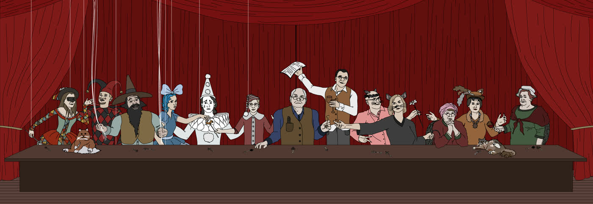

(Сценарий новогоднего представления для взрослых и детей в пяти отделениях, по мотивам сказки Толстого А. Н. с использованием цитат из произведений Оскара Уайльда и других авторов)
Использованная литература:
1. Алексей Николаевич Толстой «Золотой ключик, или Приключения Буратино».
2. Оскар Уайльд, Цитаты из произведений: «Портрет Дориана Грея» и других.
3. Иосиф Бродский, Цитата из стихотворения «Романс Коломбины».
Действующие лица и реквизит:
1. Буратино - Острый нос, полосатый колпак.
2. Автор - Очки без стекол, или с прозрачными стеклами.
3. Белая Стальная Крыса - Нарисованные усы, темная точка на носу и серый хвост. Маленький крысёныш рядом с ней.
4. Лиса Алиса - Хвостик лисы, шапочка Лисы, макияж, хайратник.
5. Кот Базилио - Очки темные круглые, усы нарисованные, хайратник.
6. Папа Карло - Шапка Папы Карло, топор или огромный нож.
7. Черепаха 1 - Капор 1, шерстяной клетчатый плед, трубка для курения с длинной ручкой.
8. Черепаха 2 - Капор 2, клетчатый плед, бутылка вишневой настойки (или вина) две рюмки.
9. Карабас Барабас - Борода, цилиндр, плетка, блоки, которые прикреплены к потолку с переброшенными через них веревками.
10. Пьеро – Макияж мима, белый балахон, колпак.
11. Мальвина - Голубой парик, бледная кожа на лице.
12. Коломбина - Цветное пестрое платье, красный макияж на щеках.
13. Арлекин - Цветная одежда из заплат, шапка Арлекина с двумя концами, красный макияж.
14. Агент Дурематор - Легендарная личность, в постановке не участвует, но упоминается.
15. Джузеппе - Друг Папы Карло - в постановке не участвует, но упоминается.
Двери, или большая коробка, с возможностью открыть створки, с замочной скважиной и надписью на этих дверях «2020». За дверью должен быть Крысиный рай.
Ключи старинные на ленточках – 13 шт. Ключи остаются у актеров после представления на память.
Действие представления происходит в большой комнате. Главный герой, Буратино, движется последовательно от сцены к сцене, по кругу. Все актеры до представления располагаются на своих исходных позициях. Актеры знают только свои слова. Что будет происходить в других эпизодах им не известно, потому незадействованные актеры являются зрителями других сцен.
Предисловие
Гаснет свет.
Звучит скрипичная мелодия шарманки.
Перед занавесом, в луче света появляется Крыса, которая бегает на полусогнутых ногах, махая хвостом, из одного угла в другой угол, при этом приговаривает:
«Где он мог потеряться, где же он мог потеряться, как же так, где же его теперь искать???»
Крыса останавливается посредине сцены.
Крыса стоит несколько минут и смотрит в зал в недоумении.
………
Звучит мелодия («минусовка») из Мюзикла «Чикаго» Рокси.
Крыса, откладывает лист с текстом в сторону:
- В детстве мои дорогие родители решили назвать меня Лариса. Лариса, вы представьте, вы вдумайтесь только, ни Аня, ни Таня, даже ни Маша или Наташа. Лариса! Это предел всему был! Хорошо я этого тогда не знала, хорошо что мне неизвестно было это. Все обошлось тогда, все обошлось по чистой случайности, просто мой Папа не смог выговорить сразу это имя, так и говорил «Рариса, Рариса». Обошлось как-то тогда!
(Переходит на фальцет)
А сейчас нет, не обошлось! Я – Крыса! Крыса! Крыса! И ничего с этим не поделаешь. Всем нормальные роли достались. А мне что? Я что хуже всех? Главная роль! Какая она главная? Рариса, Рариса, так и слышу в ушах, как звон какой-то. Рариса, Рариса! Не могу больше!
Автор прерывает монолог:
- Стоп, стоп! Ближе к тексту, мы для чего тут собрались? Слушать твои истерики? Ближе к тексту говори. Этого опуса там не было.
Крыса:
- Никто меня понять не хочет, даже самые близкие люди отвернулись! Как это получилось, я же не так всегда хотела. Ну что это такое в конце концов? Когда же это закончится?
Автор второй раз прерывает монолог:
- Все, стоп! Хватит! Сегодня ты по сценарию - Белая Стальная Крыса! Прекрати и давай будем начинать играть по тексту.
Крыса:
- Ничего не будем! Я уже ничего не хочу! Все!
……………………………
Крыса убегает и прячется за занавесом в углу.
У зрителей должно сложиться впечатление, что на этом спектакль и закончится.
Автор:
– Здравствуйте, здравствуйте, дорогие мальчики и девочки, дяденьки и тётеньки, бабушки и дедушки. Извините за это досадное недоразумение, уважаемая публика. Расскажу сейчас вам сказку, старую престарую, про ключей связку, про лесной пожар и судьбы удар, о приключениях маленького деревянного человечка в Тарабарском Королевстве, о борьбе за свободу кукольного мира, о мудрости и смелости, хитрости и коварстве.
Первая картина. В каморке Папы Карло.
Каморка Папы Карло.
Звучит музыка, песня Папы Карло, о том как он мастерит Буратино.
Папа Карло топором обтесывает полено (ватман, свернутый кругом) и постепенно из него появляется Буратино.
Папа Карло смотрит на Буратино:
- Вот ты какой хороший и пригожий, послушный и воспитанный, добрый и веселый, мой дорогой Буратино! Ты из старинной сосны сделан, каких уже нигде не сыскать. Это было самое последнее сучковатое полено, которое даже Джузеппе почему-то не смог сжечь в своем камине, мне отдал, что-то остановило его, может то, что это самое последнее полено, каких уже нет, с тех пор когда леса сосновые все сгорели, и уже не скоро такие вырастут снова.
Буратино восторженно:
- Привет! Я очень рад что появился на свет! Меня ведь ждут великие дела.
Папа Карло:
- Да, Буратино, я сделал тебя, чтобы ты дарил радость людям. Но сейчас, ты посиди один немного дома, а я пойду куплю тебе теплую одежду и букварь, нельзя же ведь ходить зимой без теплой одежды, и в школу не возьмут без букваря. Вот тебе еще ключ от нашей с тобой каморки, не потеряй его.
- Этот ключ мой старый друг Джузеппе когда-то очень давно нашел когда выкапывал полезные коренья в чистом поле, по странному совпадению он может открывать дверь нашей с тобой каморки и еще этот ключ может открыть дверь хижины самого Джузеппе.
Папа Карло вешает на шею Буратино ключ на веревочке.
Буратино:
- Иди не беспокойся, Папа Карло, все будет хорошо, я приберусь пока в твоей каморке чтобы был порядок везде.
Папа Карло уходит.
Буратино:
- Отлично, я теперь здесь главный в доме. Пойду-ка осмотрюсь, что может здесь быть для меня полезным.
Буратино увидел Крысу в углу:
-Ты кто ужасное создание? Что ищешь в нашем с Папой Карлом доме?
Крыса:
- Уйди с дороги мелкая букашка, сгрызу тебя сейчас и станешь просто стружкой!
Буратино переходит на писклявый голос:
- Поди отсюда вон, пока не поздно, пока не поняла, какой я сильный.
Буратино бросается на Крысу, она хватает его в охапку.
И утаскивает Буратино в свою нору.
Буратино сидит в норе, уткнувшись лицом в колени, наверное плачет.
Входит Папа Карло:
- Что здесь случилось, что такое?
Крыса:
- Сейчас сметешь опилки с пола, что так недавно были Буратино! Он пленник мой и очень скоро я его сгрызу.
Папа Карло:
- Пока не видит Буратино, давай я стану твоим пленным, зачем тебе мой деревянный мальчик? Возьми меня, я хоть съедобный.
Крыса:
- Ну ладно, лезь в мою нору!
Папа Карло залезает в нору. Крыса выталкивает Буратино из норы.
Крыса:
- Уходи и не возвращайся пока не принесешь мне ключ от этой дверцы. Завтра последний срок, завтра последний день, когда я могу туда войти. В Крысиный Рай.
Крыса указывает на дверцу, на которой написано «2020»
Автор:
За это дверцей – действительно Крысиный рай. Крыса потеряла ключ от рая давным-давно, и ищет его уже, наверное, лет сто. В то далекое время лесные пожары бушевали по всей округе, крысы спасались, как могли. Невыносимо долго они спускались крысиной тропой извилистым подземельем и вот увидели под собой пустоту, бескрайнюю, как опрокинутые небеса, и на корнях растений повисли они над Бездной; и главная крыса сказала: «Бросимся в эту Пустоту и посмотрим, есть ли в ней Провидение». Тогда Крыса и потеряла ключ, с тех пор его ищет. Еще пожары в лесу не утихли, а она уже его искала.
Крыса указывает на Буратино:
- Так вот! Теперь поищешь его ты! И если не найдешь, я завтра со своими дорогими детками крысятами съем твоего Папу Карло на ужин! Имей это ввиду! А теперь убирайся! И поторапливайся! Жду тебя завтра с ключом, не забудь об этом, деревянная твоя голова!
Буратино:
- Возьми, вот ключ от хижины Джузеппе!
Буратино протягивает Крысе ключ, который у него висит на шее.
Крыса:
- Ты надоел уже! Не нужен ключ, от хижины Джузеппе! Мне нужен ключ от Дверцы Рая! Беги скорей и без ключа не возвращайся!
Буратино быстро убегает.
Вторая картина. Кот Базилио и Лиса Алиса.
Кот Базилио и Лиса Алиса сидят в пыли возле дороги.
Свои монологи Кот Базилио и Лиса Алиса говорят медленно, делают в конце предложений многозначительные паузы. Иногда даже делают паузы в середине предложений.
Буратино пробегает мимо вприпрыжку.
Останавливается.
Буратино:
- Привет! Вы почему в пыли сидите?
Лиса Алиса:
- Все мы в сточной канаве, Бэбис, но некоторые видят только грязь кругом, а некоторые из нее смотрят на звезды.
Кот Базилио:
- Со впиской сегодня голяки, крутой облом, придется найтать на вокзале снова. А перед этим аскать хавчик у цивилов.
Перевод Автора:
- Сегодня нам не удалось найти достойное место для ночлега, очень неприятная ситуация, придётся снова ночевать на вокзале. А перед этим просить еду у прохожих.
Буратино:
- Все ясно с вами, - местные бомжи.
Лиса Алиса:
- Мы гости в этом мире, Буратино. Наверное, такие же, как ты.
Кот Базилио:
Ситаем здесь, ждем, что подвалит пипл. Ты Флавовый, или системный Пионер?
Перевод Автора:
- Мы здесь сидим и ждем, что к нам скоро прибудут наши единомышленники. А ты как вообще, еще в чем то сомневаешься, или уже в полной мере разделяешь наши прогрессивные взгляды?
Лиса Алиса:
- Чувак он не системный, стопудово, это по фейсу видно, хайра нет почти, да и прикид шизовый.
Перевод Автора:
- Да он не разделяет наши взгляды, однозначно, это заметно даже по выражению его лица, да и прическа у него не по последней моде, да и в одежде не поддерживает стиль.
Буратино:
- Как вы сюда попали?
Лиса Алиса:
- Когда давным-давно, 100 лет назад, леса сгорели все в округе, нам стало негде больше жить. Но мы случайно видели откуда явился тот, Страшный человек, кто поджигал леса. Он вышел из дверцы в городской стене, которая сразу исчезла. На шее у него болтался ключ, почти такой же, как и у тебя. Он обронил однажды ключ, а мы его подняли.
Кот Базилио:
- Ну да, тот ключ совсем случайно к нам попал, когда он спал. На самом деле, мы его украли!
- Этот торчек, стремнее его нету, пришел, обдолбанный в умат, и начал всех гасить, спалил в округе местные леса, зачем не знаем. Он в прошлом, там, остался навсегда, закрыли мы его калитку и выкинули ключ на чистом поле. Наверно, ловит дикий отходняк. Или свинтился, чалится на нарах.
Перевод Автора:
- Этот асоциальный, зависимый от своих пагубных привычек, человек, которого никогда ранее мы не видели, пришел к нам в мир, и в состоянии аффекта начал свою разрушительную деятельность, в частности, сжег в округе все местные леса; причины его действий не ясны. Он остался в прошлом навсегда. Мы исключили возможности для его возвращения. Он, наверное, сейчас или испытывает страшные муки совести, или задержан местными органами охраны правопорядка и отбывает срок заслуженного наказания.
Кот Базилио:
- Еще этот ушлёпок обещал, что если мы ему поможем, нам подогнать полный мешок (кубинский из-под дров) с улётным пакистанским планом, косяк которого хапают айзера с конкретною крезой - вдесятером.
Перевод Автора:
Далее Кот Базилио рассказывает об обещаниях, которые давал ему этот асоциальный тип из прошлого (или, на тот момент, из будущего), настолько неправдоподобных, что в них бы не поверил даже ребенок. Чем вызывает просто негодование Лисы Алисы.
Лиса Алиса:
- Вот уж воистину говорят: самая глупая женщина может сладить с умным мужчиной, а с дураком — только лишь самая умная.
Кот Базилио:
- Это к чему сейчас? Такой прогон голимый.
Перевод Автора:
- Мне не вполне понятен смысл твоих слов. Чем заслужил такое отношение? Которое мне кажется небрежным. Прошу мне пояснить.
Лиса Алиса обращается к Коту Базилио:
- Да так, забудь, это не важно.
Лиса Алиса обращается к Буратино:
- Так вот, нашли мы эту дверцу и вот мы здесь. Так получилось, что за дверцей той в один момент прошло уже 100 лет. Закрылась дверца навсегда, назад дороги нет. И вот мы здесь, и в этом мире, совсем не так все, как было сотню лет назад и начались некайфы. Ну а без кайфа - лайфа нет совсем.
Перевод Автора:
- Неудачи стали преследовать нас. И жизнь из-за этого потеряла все свои краски и смысл.
Кот Базилио:
- Да нет, все точно также здесь, как сотню лет назад.
- Только мы здесь уже не центровые и система глючит: кругом одни голимые базары, пипл кумарит, постоянно голяки и полный даун, трава без мазы - не цепляет, лажовый смок, цивилы стрёмные, мажором в лом идти на тусу, - хапают, гонят после, - будто голяки.
Перевод Автора:
- Только мы здесь уже не выделяемся своей исключительностью и окружающая нас действительность оставляет желать лучшего: вокруг только бесполезные разговоры, люди здесь испытывают потребности в реализации нереализованных возможностей, постоянное ощущение отсутствия чего-то важного, чувство безысходности не покидает нас, нет больше ярких впечатлений, кроме того, низкое качество табачных изделий, порядочные люди вокруг, тем не менее, не вызывают больше положительных эмоций, а у молодых людей, ведущих роскошную жизнь больше нет желания к общению в социуме, они становятся асоциальными личностями, склонными к введению в заблуждение других людей.
Кот Базилио:
- Свинтили почти всех уже, присевших на систему, остались только мы. Контора стрёма нагоняет, накатили стремаки. На ярде в полис - урловые мэны. Живем на аске напостой, или под мостом или в трубе на Кольцевой, поскольку нет у нас цивильной ксивы, с впиской в цивильный флэт - тоже без мазы. Я уже месяц не торчал, короче.
Перевод Автора:
- Задержаны практически все, разделяющие наши взгляды, только мы, каким-то чудом, остаемся еще на свободе. Существует постоянный риск попасть в неприятную ситуацию и быть задержанными представителями местных органов охраны правопорядка. Чувство дискомфорта, неуверенности и страха не покидает нас. На службе в органах охраны правопорядка агрессивно настроенная молодежь, как правило, невысокого интеллектуального уровня. Нам приходится попрошайничать, жить на улице (под мостом или в подземном переходе на Кольцевой дороге) поскольку нет у нас правильно оформленных документов и найти жилье поэтому не представляется возможным. Кроме того, чувство жесточайшей депрессии вот уже месяц как не покидает меня.
Слышится неподалеку какой-то шум.
Лиса Алиса говорит Коту Базилио:
- Пойди пролукай, что там за сэйшин там творится?
Перевод Автора:
- Пойди посмотри, что за собрание там организовано.
Кот и Лиса подводят Буратино к окну роскошного особняка, где он видит Карабаса Барабаса и кукол, которые поют песню.
Буратино смотрит в окошко внутрь небольшой комнаты.
Карабас Барабас сидит на возвышении (на столе стоит стул). Куклы на полу стоят на коленях лицом к зрителям. У кукол к рукам привязаны веревки, которые переброшены через блоки под потолком. У соседних кукол по две руки привязаны к одной веревке (всего 5 веревок), таким образом все куклы связаны.
Карабас поет свою песню.
Всех на спектакль приглашаю
Там будет множество затей.
Я этих кукол обожаю,
Как будто собственных детей.
Мы вам покажем представленье,
Ведь это просто загляденье,
Ах это просто наслажденье,
Ах это просто объеденье!
Куклы поют припев жалобно:
Да здравствует, наш Карабас удалой!
Уютно нам жить под его бородой.
И он никакой не мучитель,
Он просто наш добрый учитель.
Карабас поочередно подтягивает веревки, у кукол поднимаются руки.
Карабас трясет своей плеткой:
- Допели песню, обожаемые куклы, и все пойдете на ночь в ящик с нафталином!
Буратино стоит снаружи возле окна дома Карабаса Барабаса с Лисой и Котом:
- Что это значит? Почему эти куклы связаны? Кто этот бородатый человек? Почему они позволяют ему так себя с ними вести?
Кот Базилио:
- Ты нас уже совсем зааскал, Чайлд! Этот торчок, завернутый на куклах, он - Доктор Кукольных наук, со штатным погонялом - Барабас. Френд и сподвижник Кинга Тарабара. Попробуй только обстебать его, скипеть мы если не успеем, то полис всех нас и свинтит. Моментом.
Перевод Автора:
- Вы задаете слишком много вопросов, молодой человек. Этот увлеченный господин, вдохновлен куклами сверх меры, даже, возможно, до потери адекватного представления о действительности. Он – Доктор Кукольных Наук, по фамилии Барабас. Друг и сподвижник Тарабарского Короля. Если чем-то разозлить его, или даже только попробовать доставить ему некоторый дискомфорт, то мы можем просто не успеть ретироваться отсюда, как нас задержат представители местных органов охраны правопорядка. И это произойдет очень быстро.
Лиса Алиса:
- А еще он может легко схватить тебя за шиворот и бросить в камин.
Кот Базилио:
- Сейчас тебе вписаться в эту хазу – безмазняк! Ты тикеты достал на этот сэйшн? Моментом в море! Все это левые расклады, короче, по-моему, пора линять.
Перевод Автора:
- Опрометчивым решением для тебя будет пойти на эту «вечеринку» прямо сейчас. Тем более, что тебя туда никто не приглашал. Помни о смерти. Все происходящее там, нас не касается, и я предлагаю ретироваться отсюда без всякого промедления.
Лиса Алиса обращается к Коту Базилио:
- Застремал Бэбиса, Базиль, телегами пустыми, гоняешь порожняк уже.
Перевод Автора:
- Ты ребенка уже ввел в состояние неуверенности, Базилио, своими недостойными словами. Твои слова пусты, а фразы – не содержательны.
Буратино:
- Сейчас мне нужно спасти Папу Карло. Найти ключи сначала. Но я обещаю, что вернусь и спасу этих несчастных кукол. Даже если есть риск, что попаду в огонь камина. Меня это не остановит!
Лиса Алиса:
Единственный способ избавиться от искушения — поддаться ему.
Кот Базилио:
- Ну ты уматный, Чайлд! Держи, вот тебе фенечки улётные на память. Может как раз и пригодятся.
Перевод Автора:
- Ты добрый малый! Держи вот тебе милые безделушки на долгую память! Может так случиться, что они тебе когда-нибудь станут просто необходимыми.
Лиса Алиса и Кот Базилио снимают с шеи (или с хайратников) ключи и отдают их Буратино.
Третья картина. На пруду у Тетушек Тортилл (Между Сциллой и Харибдой).
Звучит музыка, Романс Черепахи Тортиллы.
Две Тетушки Тортиллы сидят в креслах, их ноги накрыты клетчатыми шерстяными пледами, капоры удерживался на голове мантоньерками.
Было бы идеально, чтобы они обе Тетушки Тортиллы курили одну длинную трубку, передавая ее друг другу, или чтобы каждая курила свою. Рядом на столике стоит начатая бутылка вина и две рюмочки, вместимостью не более 100 грамм каждая.
Тетушки Тортиллы ведут светскую беседу и не замечают как в их расположение незаметно попадает Буратино и слушает их разговор.
Тортилла 1: - Хорошая сегодня погода, дорогая Тетушка Тортилла!
Тортилла 2: - Да уж, погода хороша, моя драгоценная Тетушка Тортилла, тепло и сыро, все точно так, как любим с Вами мы!
Тортилла 1: - А вчерашняя погода была не так хороша.
Тортилла 2: - Да, немного было не так как нравится нам с Вами.
Тортилла 1: - Не помню последние лет 150 такой хорошей погоды, как сегодня.
Тортилла 2: - Да нет, лет 100 назад, один из вечеров был тоже также тепл, тих, печален.
Тортилла 1: - Красивые слова, вы говорите!
Тортилла 2: - Красивых слов не существует, все равнозначно в нашем мире.
Тортилла 1: - Как же искусство, что Вы скажете на это?
Тортилла 2: - Иллюзия, не более того.
Тортилла 1: - Ну а любовь?
Тортилла 2: - Это – болезнь, болезнь больных людей.
Тортилла 1: - Религия?
Тортилла 2: - Распространенный веры суррогат.
Тортилла 1: - Вы так скептичны, как никогда, сегодня, дорогая.
Тортилла 2: - Ничуть! Ведь скептицизм - начало веры.
Тортилла 1: - Да как же Вас определить сегодня?
Тортилла 2: - Определить – ведь это значит, ограничить, а ограничить что-то, значит обмануть себя, а мы с Вами стары уже для этого самообмана.
Тортилла 1: - Трагедия не в том, что мы стареем, а в том, что мы душой остаемся молодыми...
Тортилла 2: - Да точно так, и чтобы молодость вернуть, нам стоит только повторить ее безумства.
В этот момент со звуком и треском в их расположение вваливается Буратино, спотыкаясь и падая, опора на которую он упирался, когда слушал разговор Тетушек Тортилл, падает.
Буратино весь красный, смущенный, встает и отряхивается.
Буратино: - Привет, любезные старушки!
Тортилла 1: - Привет, привет, давно такого не видали, ты чей малыш, и почему ты плачешь?
Искренне удивляясь, Тетушки Тортиллы рассматривают нос Буратино.
Буратино: - Не плачу я, никто еще не видел даже одной слезы из глаза Буратино! Я сам кого угодно могу заставить плакать!
Тортилла 2: - Послушный и хороший мальчик так не скажет. Ведь добрый человек, пусть даже мальчик, он не всегда бывает счастлив, но вот счастливый человек всегда обычно добр.
Буратино: - Не так хорош я, милые старушки!
Тортилла 1: - Скажу вам, лучший способ чтобы сделать ребенка хорошим и добрым – сделать его счастливым, что нужно для счастья тебе, дорогой Буратино?
Буратино: - Какое счастье, милые старушки? Мой Папа Карло в плен попал к коварной Крысе, я в этом виноват, а завтра он вообще может погибнуть! Если не принесу какие-то ключи, которые откроют двери Рая. У вас случайно нет таких ключей? Я умоляю мне отдать их.
Тортилла 2:
- Мы триста лет живем уже на свете и знаем что за ключ тебе сегодня нужен. Держи ключи! Но тот, который ищешь всегда с тобою был! Вот еще ножницы возьми! Они нужны тебе сегодня тоже будут.
(Тетушки снимают свои ключи и отдают их Буратино)
Буратино: - Спасибо, добрые старушки! Еще скажите, что мне делать? Какой конец моих мытарств мне выбрать?
Тортилла 1: - Все всегда заканчивается хорошо. Если все закончилось плохо, значит это еще не конец. Когда гонец прошел сквозь время, чтобы пожар раздуть и деревья сжечь, мы знали, что напрасны наши скорби и все равно он не обманет Провиденье. Когда леса горели, словно спички, мы знали, что хватило б только наших слез, чтоб загасить эти пожары.
Буратино недоумевает: - Скажите Тетушки, умоляю вас, что же мне дальше делать?
Тортилла 2: - Не скажем, милый Буратино. Ты должен сам решить, что делать дальше. И мы не можем оказать влияние. Хорошего влияния не существует. Само влияние - нравственности чуждо!
Буратино: - Ну почему же?
Тортилла 1: - Потому что влиять на другого человека – это значит передать ему свою душу. Он начнёт думать не своими мыслями, пылать не своими страстями. Он станет отголоском чужой роли, и музыкантом, попадающим не в такт.
Тортилла 2: - Цель жизни нашей – самовыражение! И проявить свою нагую сущность, – вот для чего мы все живём на свете. В наш век самих себя бояться люди! Они забыли, высший долг – самими быть собою! Все эти люди – милосердны! Они голодного накормят, оденут нищего страдальца. Но собственные души их наги и умирают с голоду и страха! И мужество утратили они!
Тортилла 1: - А может быть, его у нас никогда и не было. Боязнь общественного мнения, это основа морали, и страх перед Богом, страх, на котором держится религия, - вот что властвует над нами. Между тем, мне думается, что, если бы каждый человек мог жить полной жизнью, давая волю каждому чувству и выражение каждой мысли, осуществляя каждую свою мечту, - мир ощутил бы вновь такой мощный порыв к радости, что забыты были бы все болезни средневековья, и мы вернулись бы к идеалам эллинизма, а может быть, и к чему-либо ещё более ценному и прекрасному.
Но и самый смелый из нас, такой как этот Буратино, боится самого себя...
Буратино:
- Я понял все, спасибо за урок. Я побежал, я знаю, что мне делать!
Буратино бежит дальше (на месте).
Четвертая картина. За кулисами театра Карабаса Барабаса.
Карабас сидит на возвышении (на столе стоит стул). Куклы на полу стоят на коленях лицом к зрителям. У кукол к рукам привязаны веревки, которые переброшены через блоки под потолком.
Карабас поет свою песню.
Всех на спектакль приглашаю
Там будет множество затей.
Я этих кукол обожаю,
Как будто собственных детей.
Мы вам покажем представленье,
Ведь это просто загляденье,
Ах это просто наслажденье,
Ах это просто объеденье!
Куклы поют припев.
Да здравствует, наш Карабас удалой!
Уютно нам жить под его бородой.
И он никакой не мучитель,
Он просто наш добрый учитель.
Карабас подтягивает все веревки, переброшенные через блоки, и у кукол поднимаются руки.
Карабас поет свою песню, второй куплет.
Эй старики и молодые,
За то что я творю добро,
Гоните ваши золотые
И не забудьте серебро.
Куклы поют припев.
Да здравствует, наш Карабас удалой!
Уютно нам жить под его бородой.
И он никакой не мучитель,
Он просто наш добрый учитель.
Не страшен сегодня потоп и пожар.
Спасибо тебе дорогой Дуремар.
Господин Барабас – не эксплуататор.
Вечная слава, Агент Дурематор.
Карабас подтягивает все веревки, у кукол поднимаются руки.
В помещение врывается Буратино:
- Я знаю что здесь происходит! И положу конец насилию!
Карабас очень испугался, что удивило всех кукол.
Они перешептываются:
Пьеро поворачивается к Мальвине:
- Господин Барабас испугался.
Мальвина поворачивается к Коломбине:
- Господин Барабас испугался
Коломбина поворачивается к Арлекину:
- Господин Барабас испугался.
Арлекин никуда не поворачивается и говорит медленно самому себе:
- Господин Барабас испугался.
Пьеро поворачивается к Мальвине:
- Господин Барабас не бросил его в камин.
Мальвина поворачивается к Коломбине:
- Господин Барабас не бросил его в камин.
Коломбина поворачивается к Арлекину:
- Господин Барабас не бросил его в камин.
Арлекин никуда не поворачивается и говорит в недоумении медленно самому себе:
- Господин Барабас не бросил его в камин.
Лицо Карабаса исказилось гримасой страха.
Карабас в ужасе закрывает лицо руками.
Карабас в ужасе стонет:
- А! А! А!
Буратино ножницами обрезает веревки и куклы освобождаются.
Но все еще не верят в свое освобождение. Сидят на месте.
Поднимают и опускают руки, не веря в свое счастье.
Буратино подходит к Карабасу с ножницами в руке:
- Не думал я, что все так просто. Что напугало тебя, Доктор? Куклы и их наука? Отвечай мне быстро! И что за ключ, вот этот, у тебя на шее? Да их четыре, даже пять! Отдай мне все их, быть может среди них есть ключ от дверцы Рая!
Карабас в недоумении:
- Возьми, возьми, отдам их все тебе, ключи эти забрал у кукол.
Карабас снимает с шеи ключи, отдает его Буратино, немного успокоился, когда понимает, что Буратино не собирается использовать ножницы.
Автор:
- Последний, пятый, ключ был от чемодана с нафталином, где ночью куклы спали.
Карабас, очень волнуясь и запинаясь, рассказывает:
- Давным-давно, когда уже не помню, мне рассказали Черепахи, что мой Успех, Покой, Благополучие нарушит Кукла с Длинным носом, её Шарманщик изготовит. Сосны растущие в округе, что пиками проткнули небо, сучок одной из них и станет Этой Куклой. Услышав это предсказание, направил в Прошлое Агента, который назывался Дурематор. И равных он не знал себе ни в чем. На сотню лет назад его направил, не сплоховала Тарабарская машина. Чтобы все сосны, что растут в округе, нещадно вырубить и сжечь, чтоб даже семя их пропало тоже. Исчезли сосны, страшные пожары развеяли еловый дым. Не доработал видно Дурематор. Один сучок остался невредимым. Наверное, он потому и не вернулся, что долг не смог, как следует исполнить.
Буратино:
- Я знаю почему он не вернулся, Лиса и Кот этот проход закрыли, из прошлого через него сюда попали.
Карабас:
- Проклятье!
Куклы наконец-то понимают, что уже свободны, поднимаются со своих мест.
Радуются. Смеются.
Звучит музыка.
Куклы начинают танцевать, берут друг друга за руки, и кружатся.
Буратино танцует с ними.
Куклы останавливаются.
Пьеро:
Я был когда-то славной куклой, в белом костюме, с белым воротником, стоял в витрине старой Аптеки, рядом со мной был шкаф с затхлыми микстурами в пыльных флакончиках, ходили дочери Аптекаря в белых фартуках, вытирали пыль со шкафа, играли со мной, давали мне пить таблетки и лечили меня разными снадобьями. Каждую ночь они укладывали меня спать, чтобы утром снова поставить или усадить меня в витрине для привлечения покупателей. Я тогда писал стихи и развлекал ими моих маленьких подружек. Они радовались, смеялись, так звонко, что этот смех до сих пор звенит у меня в ушах. Когда Аптекарь умер, девочки его выросли, забыли детские забавы, попали сначала в пансион и вскоре вовсе вышли замуж, продали аптеку. Я стал совсем никому не нужен. Новый хозяин не стал выбрасывать меня, продал Старьевщику за медную монету. Старьевщик чистил свою обувь моею белой курткой. С ним я скитался очень долго по дворам и базарам, потом продал меня он Господину Барабасу. И вот я здесь на ниточках танцую, уже не помню сколько лет. Сегодня получил свободу, теперь не знаю, что мне с ней делать. Забыл себя, когда я был свободным. Забыл и вспомнить не могу. Я жил мечтой о свободе, и что теперь мне делать?
Мальвина:
Если вы поймали птицу, то не держите её в клетке, не делайте так, чтобы она захотела улететь от вас, но не могла. А сделайте так, чтобы она могла улететь, но не захотела.
Была я тоже славной куклой из фарфора. Капризной, милой и смешливой. Всех изводила своими капризами, своими шутками, которые иногда были даже жестокими, но смешными, пока не попала в кукольный театр, где к моим рукам привязали ниточки, дергали за них целыми вечерами. И глубокой ночью, когда я уже ничего не чувствовала от усталости, укладывали спать в темный сундук от которого пахло чем-то терпким и сладко-приторным, чтобы утром поднять меня, вытащить из ящика на Свет Божий и начать повторить все сначала, то что не закончили вчера. И так день за днем, день за днем, день за днем. Менялись города и балаганы, не менялся только темный сундук и этот запах, мне кажется, что нет на свете места, где бы я его не чувствовала.
Я давно не мечтаю о том, что наступит нечто или некто и жизнь моя изменится, я стану делать, то что захочу. Раньше мне казалось, что свобода – это получать все, что хочешь, а сейчас подозреваю, что свобода в том, чтобы не хотеть. И еще всех простить. Всех-всех и даже Господина Барабаса.
Одна сломанная кукла когда её спросили, что такое прощение, дала чудесный ответ: "Это аромат, который дарит цветок, когда его топчут".
Коломбина:
- Я Коломбина, я мягкая кукла, но я всегда твердо стояла на своих маленьких ножках. Меня когда-то сшили очень искусные швеи из дорогих лоскутов атласных и бархатных платьев знатных вельмож, они вложили мне внутрь маленькую пуговичку в форме сердечка, они вдохнули в это сердечко и в меня жизнь, я никому не говорила до сих пор об этом.
Это всегда придавало мне силы, и это был мой маленький секрет. Это помогло мне однажды, когда я осталась совсем одна, это помогло, когда вокруг были только злые люди, это помогало мне всегда быть стойкой, когда тяжело, быть до сумасшествия веселой, когда весело, это помогало мне, когда нужно было плясать и смеяться целый день, когда совсем не смешно, даже когда уже не понимаешь ничего и забываешь себя в бесконечной пляске, кто ты и зачем ты здесь?
Здесь в балагане Господина Барабаса я встретила Арлекина, которого не возможно было не полюбить. И Арлекину моему успех и слава ни к чему, одна любовь ему нужна, - и я его жена. Я пойду с ним на край света. Сейчас когда мы свободны, кружится голова от этого счастья. Мы заслужили это счастье, эту свободу, потому что мы всегда верили в это.
Арлекин:
- Я жил в балагане сколько себя помню. Но я видел и чувствовал жизнь вокруг, другую жизнь, которая бурлила, переливалась всеми красками и цветами, запахами и звуками.
Боже мой,- думал я, если бы только у меня была Свобода! Какое это сладкое слово - Свобода! Это когда ты вдыхаешь свежий холодный сладкий воздух, и стоишь в этот момент на краю обрыва и легкий ветер играет твоими волосами, то раздувает их в стороны, то укладывает их на место.
Ты свободен, ты можешь даже прыгнуть вниз, и никто не сможет остановить тебя. Как же манит что-то тебя вниз! Ты можешь все, абсолютно! Абсолютно!
Когда буду свободным, я буду подниматься с первым лучом Солнца, целый день бежать вслед за ним, я буду на бегу вдыхать свежий ветер, пить туман и росу с цветов, а ночью, если она меня когда-нибудь настигнет, звезды будут петь мне свои серенады.
Если бы у меня было хотя бы немного свободы, я дал бы людям крылья и научил бы их летать. Отпустите свои камни, не держитесь за них, кричал бы я им, они не дают вам взлететь, оставьте их на Земле, вы будете летать! Смотрите, кричали бы люди, это чудо, он парит над Землей!
Все это наступит уже завтра, а сегодня мне нужно просто поверить, что я – Свободен.
Буратино резко останавливается, что-то вспоминает :
- Спешу я очень, до свидания, спасти мне нужно Папу Карло, который в плен попал к коварной Крысе, и это все из-за меня.
Буратино убегает.
Карабас сидит, закрыв лицо руками.
Куклы убегают в разные стороны.
Пятая картина. В крысиной норе, в каморке Папы Карло.
Крыса сидит в своей норе. Рядом сидит Папа Карло.
Крыса:
- Как ты думаешь, Карло, Буратино придет к нам сегодня? Он принесет мне ключ от Дверцы Рая? Я съем тебя сейчас. Как думаешь, он этому поверил?
Папа Карло:
- Да, думаю поверил.
Крыса:
- Мне ничего не остается, Карло. Ведь уже вечер наступил.
Папа Карло:
- Погоди немного, еще не вечер.
Буратино резко врывается в каморку:
- Крыса, держи свои ключи, все то, что удалось собрать, один из них откроет Дверцу Рая. И это ключ, наверно, который был всегда со мной. Вот он!
Крыса:
- Спасибо, Буратино!
Звучит музыка Волшебная Дверь.
Крыса выбирает один из ключей, открывает Дверцу Рая и исчезает за ней.
Папа Карло выходит из плена.
Буратино всем раздает ключи, которые у него остались:
- Спасибо всем друзья и с Новым Годом!
С потолка начинает падать конфетти и звучит музыка.
Счастливый конец.
31 декабря 2019 г.